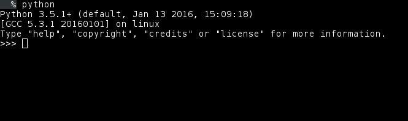
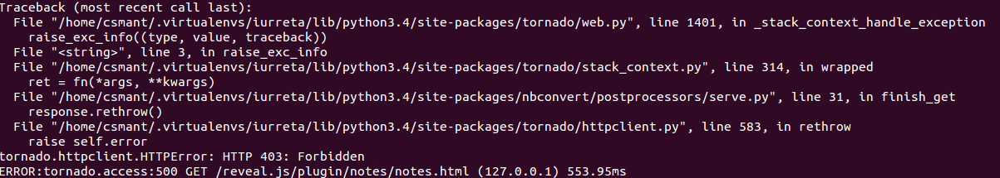

Martxan jartzeko:
Sakatu Windows tekla
Bilatu 'Terminala'
Exekutatu python

Nola atera interpretetik
Sakatu Ctrl + D
print("Hello world")
Hello world
Interprete interaktiboa laguntza jatorri handia da
Hona hemen hiru era interprete interaktiboan laguntza lortzeko
dir(print)
['__call__', '__class__', '__delattr__', '__dir__', '__doc__', '__eq__', '__format__', '__ge__', '__getattribute__', '__gt__', '__hash__', '__init__', '__le__', '__lt__', '__module__', '__name__', '__ne__', '__new__', '__qualname__', '__reduce__', '__reduce_ex__', '__repr__', '__self__', '__setattr__', '__sizeof__', '__str__', '__subclasshook__', '__text_signature__']
Man itxurako lehio bat zabaltzen du.
Bereziki interesgarria liburutegi oso bat aztertzeko
help(print)
Help on built-in function print in module builtins:
print(...)
print(value, ..., sep=' ', end='\n', file=sys.stdout, flush=False)
Prints the values to a stream, or to sys.stdout by default.
Optional keyword arguments:
file: a file-like object (stream); defaults to the current sys.stdout.
sep: string inserted between values, default a space.
end: string appended after the last value, default a newline.
flush: whether to forcibly flush the stream.
print(print.__doc__)
print(value, ..., sep=' ', end='\n', file=sys.stdout, flush=False) Prints the values to a stream, or to sys.stdout by default. Optional keyword arguments: file: a file-like object (stream); defaults to the current sys.stdout. sep: string inserted between values, default a space. end: string appended after the last value, default a newline. flush: whether to forcibly flush the stream.
Gorde kodea .py fitxategi batean
Exekutatu
echo 'print("Hello world")' > helloworld.py
python helloworld.py
#!/usr/bin/env python
print("Hello world")
chmod u+x helloworld-script
./helloworld-scritp
Irakurterreza izateko diseinatuta dago lengoaia. Adibidez, sinboloak erabili beharrean hitzak erabilzen ditu (and, or, not,...)
Kode blokeak (iterazio, funtzioak, klaseak...) indentazio bidez zehazten dira
Printzipioz agindu bakoitza lerro batean adierazi behar da (indentazioa medio), baina ' \ ' karakterea erabili daiteke lerro anitzetan banatzekoa agindu bat.
Aldagaiak dinamikoki zehazten dira
Ez da beraien mota zehaztu behar
Exekuzioan zehar mota desberdinetako balioak hartu ditzazkete
a = 2
print(zehaztu_gabeko_aldagaia)
--------------------------------------------------------------------------- NameError Traceback (most recent call last) <ipython-input-8-61bca81ba547> in <module>() ----> 1 print(zehaztu_gabeko_aldagaia) NameError: name 'zehaztu_gabeko_aldagaia' is not defined
Aldagai izenaren lehen elementua hizki bat izan behar da
N luzerako karaktere kateak dira, non N >= 1
Hizki zein zenbakiz osatuta egon daitezke
_ karakterea hizki bat da (hortaz aldagai izendatze hasieran erabili daiteke)
Ezin dira Pythoneko hitz erreserbatuen berdinak izan
Pythonek maiuskula eta minuskulak bereizten ditu
2aa = 2
File "<ipython-input-1-cae5a3925636>", line 1 2aa = 2 ^ SyntaxError: invalid syntax
a = 2
A = 5
a == A
False
| and | False | not |
| as | finally | or |
| assert | for | pass |
| break | from | |
| class | global | raise |
| continue | if | return |
| def | import | True |
| del | in | try |
| elif | is | while |
| alse | lambda | with |
| except | None | yield |
| exec | nonlocal |
None = 0
File "<ipython-input-9-86d92d4f51b6>", line 1 None = 0 ^ SyntaxError: can't assign to keyword
# Hau komentario bat da
"""
Lerro bat baino gehiagotan
adierazitako komentarioa
"""
| int | Zenbaki osoa |
| long | Zenbaki osoa |
| float | Koma higikorrekoak |
| complex | Zenbaki konplexuak |
gehi = 2 + 2
ken = 2 - 2
bider = 4 * 2
zati = 4 / 2
print(gehi)
print(ken)
print(bider)
print(zati)
4 0 8 2.0
Zatiketaren emaitza koma higikorrean bueltatzen da.
Zatiketaren alde osoa lortzeko \\ erabili behar da
Aldiz hondarra lortzeko %
koma_higikorrean = 17 / 3
osoa = 17 // 3
hondarra = 17 % 5
print(koma_higikorrean)
print(osoa)
print(hondarra)
5.666666666666667 5 2
5**2
25
Eragiketak eskuinetik ezkerrera exekutatzen dira.
Portaera hau aldatzeko parentesiak erabili daitezke
print(2 + 2 * 3)
print((2 + 2) * 3)
8 12
Datu bat motaz aldatzeko eragiketa da cast bat
Karaktere kateak zenbaki oso bihurtzeko int() erabili dezakegu
Karaktere kateak koma higikorreko zenbaki bihurtzeko float() erabili dezakegu
Jaso terminaletik balio bat (momentuz suposa dezagun beti izango dela zenbakizkoa) eta dagokion BEZa (momentuz %21...) kalkulatu. Ondoren erakutsi pantailan emandako balioak izango lukeen kostu osoa.
Teminaletik datua jasotzeko input erabili behar da
Eragigaiak: True eta False
Eragiketak: and , or eta not
Konparazio eragiketak: == , != , > , < , >= , <=
x = True
y = False
print(x and y)
print(x or y)
print(not(x))
False True False
x = 1
y = 2
print(1, x == y)
print(2, x != y)
print(3, x > y)
print(4, x < y)
print(5, x >= y)
print(6, x <= y)
1 False 2 True 3 False 4 True 5 False 6 True
if
if EXPRESSION:
# EXPRESSION betetzen denerako kodea
else:
# EXPRESSION betetzen ez denerako kodea
else adarra ez da derrigorrezkoa
beste baldintza bat konprobatu
if EXPRESSION:
# EXPRESSION betetzen ez denerako kodea
elif EXPRESSION2:
# EXPRESSION ez da betetzen eta EXPRESSION2 bai
else:
# EXPRESSION eta EXPRESSION2 ez dira betetzen
for
for elem in iterable:
# Iterableko osagai bakoitzerako kodea
for elem in range(5):
print(elem)
0 1 2 3 4
while
while BALDINTZA:
# BALDINTZA betetzen den bitartean exekutatuko den kodea
continue aginduak uneko iterazioa gelditu eta hurrengora iteraziora pasatzen da
break aginduak exekuzio fluxua dagokion iterazio bloketik kanpora ateratzen du
else sententzia for barruan
for sententziak else sententzia bat onartzen du. Sententzia honen edukia for blokearen bukaeran exekutatuko da, baina baldin eta soilik baldin blokearen bukaera ez baldin bada break sententzia baten ondorioz gertatu
pass sententziak ez du ezer egiten. Sintaktikoki beharrezkoa denean erabiltzen da. Gehienetan, ezer egiten ez duten komenientziazko klase minimoak eraiki, edo gero osatu beharreko zerbaiten oroigarri bezala erabiltzen da.
for n in range(2, 10):
for x in range(2, n):
if n % x == 0:
print(n, 'berdin', x, '*', n//x)
break
else:
# loop fell through without finding a factor
print(n, 'lehena da')
2 lehena da 3 lehena da 4 berdin 2 * 2 5 lehena da 6 berdin 2 * 3 7 lehena da 8 berdin 2 * 4 9 berdin 3 * 3
for num in range(2, 10):
if num % 2 == 0:
print("Bikoitia", num)
continue
print("Bakoitia", num)
Bikoitia 2 Bakoitia 3 Bikoitia 4 Bakoitia 5 Bikoitia 6 Bakoitia 7 Bikoitia 8 Bakoitia 9
Batuketak egiten dituen kodea idaztea da ariketa honen helburua. Erabiltzaileak batu nahi dituen zenbakiak sartuko ditu banan banan. Zenbaki guztiak sartu dituenean 0 sartuko du. Orduan gure kodeak batuketaren emaitza aurkeztuko du pantailan.
while kontrol egitura erabiltzea gomendatzen da
Fibonacciren zenbaki segidak.
Erabiltzaileari eskatu zenbat osagaiko zenbaki segida lortu nahi duen.
Ariketa hau era askotara ebatzi daiteke, baina for begiztekin egitea eskatzen da.
Ez dut gehiegi gastatu nahi
Erabiltzaile batek gastatu nahi duen diru kopuru jakin bat dauka. Ez du inondik inora diru hori baino gehiago gastatu nahi erosketan, eta horretan laguntzeko kodea prestatuko dugu. Lehenik eta behin jaso zein den erabiltzaileak gastatu nahi duen diru kopuru maximoa, eta jarraian galdetu erosi nahi dituen erosgaien prezioaz, muga gainditzen ez duen artean erosten jarraitu dezake erabiltzaileak.
Ariketa hau burutzeko kodea fitxategi batean gorde
Karaktere kateak adierazteko ' zein " erabil daitezke.
Bata edo bestea erabili ez dago inongo alderik (beste programazio lengoiaia batzuetan badago, gehienbat kontrol aldagaiekin)
'karaktere katea'
'karaktere katea'
"karaktere katea"
'karaktere katea'
'Kakotx sinplea \' da hau'
"Kakotx sinplea ' da hau"
'"Bai" esan zuen'
'"Bai" esan zuen'
Shell interaktiboan ari garenean, emaitza kakotx artean agertuko da. Eskapatzeko karakterea ere erakutsiko da
Batzuetan honek sarrera eta irteera desberdin ikustaraztea eragin dezake, baina errepresentazio kontu bat besterik ez da.
Emaitza kakotx bikoitzen artean erakutsiko da, baldin eta bere barnean kakotx sinpleak baldin badaude.
print funtzioak irteera irakurgarriago bat emango digu. Irekiera eta itxiera kakotxik ez du idatziko, eskape karaktererik ez du erakutsiko eta karaktere bereziak interpretatuko ditu (adb: \n lerro jauzia)
'"Agur t\'erdi" esan zigun'
'"Agur t\'erdi" esan zigun'
print('"Agur t\'erdi" esan zigun')
"Agur t'erdi" esan zigun
'Lehen lerroa\nBigarren lerroa'
'Lehen lerroa\nBigarren lerroa'
print('Lehen lerroa\nBigarren lerroa')
Lehen lerroa Bigarren lerroa
print('C:\nire\dokumentuak') # \n lerro jauzi karakterea da
C: ire\dokumentuak
print(r'C:\nire\dokumentuak') # Jarri arreta hasierako r hizkian
C:\nire\dokumentuak
Lerro bat baino gehiago behar duten karaktere kateak sortzeko """ karaktere artean zehaztu behar ditugu
Lerro anitzeko komentarioak bezalaxe
Lerro jauzi karaktereak automatikoki ezartzen dira. Portaera hau aldatu daiteke \ karakterea idatziz lerro bukaeran
print("""\
Lehen lerro jauzia idatziko
ez
duen karaktere katea""")
Lehen lerro jauzia idatziko ez duen karaktere katea
# 3 aldiz '123&' katea, eta bukaeran '56'
3 * '123&' + '56'
'123&123&123&56'
Karaktere kateen elementu bakoitza indize bidez atzitu daiteke.
Lehen elementuaren indizea 0 da eta azkenarena n-1 non n karaktere katearen luzera den.
Ez dago character datu mota berezirik, 1 luzerako karaktere kateak dira
Indize negatiboak ere erabili daitezke, non -1 ek azken elementua adierazten duen
katea = 'Python'
print(1, katea[0])
print(2, katea[5])
print(3, katea[-1])
1 P 2 n 3 n
katea = 'Python'
print(katea[6])
--------------------------------------------------------------------------- IndexError Traceback (most recent call last) <ipython-input-15-184537b7cb3a> in <module>() 1 katea = 'Python' ----> 2 print(katea[6]) IndexError: string index out of range
Indexazioaz gain, zatikatu (slicing) ere egin ditzazkegu karaktere kateak
Zatikatzeak jatorrizko karaktere katearen azpimultzoak lortzeko balio du
Aukeratu nahi dugun zatia [n:m] bezala adieraziko dugu, non:
katea = 'Python'
print(1, katea[0:2]) # 0 posiziotik hasi eta 1 posiziorarteko zatia
print(2, katea[2:5]) # 2 posiziotik hasi eta 4 posiziorarteko zatia
1 Py 2 tho
Hau da, lehen zenbakia (n) beti bueltazen da, eta azkena (m) beti kanporatzen da
Honela ba s katea beti izango da s[:i] + s[i:]-ren berdina
katea = 'Python'
print(katea[:2] + katea[2:])
print(katea[:4] + katea[4:])
Python Python
Zatiketa indizeek besterik ezeko balio seguruak dauzkate.
katea = 'Python'
print(katea[:2])
print(katea[4:])
Py on
katea = 'Python'
print(katea[2:78])
print(katea[78:]) # karaktere kate hutsa bueltatuko du
thon
katea = 'Python'
katea[0] = 'J'
--------------------------------------------------------------------------- TypeError Traceback (most recent call last) <ipython-input-21-e7a0b2e14817> in <module>() 1 katea = 'Python' ----> 2 katea[0] = 'J' TypeError: 'str' object does not support item assignment
katea = 'Python'
kate_berria = 'J' + katea[1:]
print(kate_berria)
Jython
Karaktere kate baten luzera ezagutzeko len barne funtzioa erabili daiteke
Gogoratu karaktere katearen azken indize erabilgarria luzera - 1 dela. Hortaz len erabili daiteke segurtasunez indizeak atzitzeko.
katea = 'Python'
print(len(katea))
6
Erbailtzaileak sartutako hitza palindromoa den edo ez erabakiko duen kodea idatzi.
Karaktere kateak inprimatzerako orduan format erabiltzen da
Inprimatu nahi dugun karaktere katean 'aldagaiak' definitu ditzazkegu eta format funtzioak beteko ditu inprimatu aurretik
Adibidez
"First, thou shalt count to {0}" # References first positional argument
"Bring me a {}" # Implicitly references the first positional argument
"From {} to {}" # Same as "From {0} to {1}"
"My quest is {name}" # References keyword argument 'name'
"Weight in tons {0.weight}" # 'weight' attribute of first positional arg
"Units destroyed: {players[0]}" # First element of keyword argument 'players'.
Oinarrizko karaktere kate formatua
>>> '{0}, {1}, {2}'.format('a', 'b', 'c')
'a, b, c'
>>> '{}, {}, {}'.format('a', 'b', 'c') # 3.1+ only
'a, b, c'
>>> '{2}, {1}, {0}'.format('a', 'b', 'c')
'c, b, a'
>>> '{2}, {1}, {0}'.format(*'abc') # unpacking argument sequence
'c, b, a'
>>> '{0}{1}{0}'.format('abra', 'cad') # arguments' indices can be repeated
'abracadabra'
Izen bidez formatua ematen
>>> 'Coordinates: {latitude}, {longitude}'.format(latitude='37.24N', longitude='-115.81W')
'Coordinates: 37.24N, -115.81W'
Elementuen osagaiak atzitzen
c = complex(2,1)
'Erreala: {0.real} Imaginarioa: {0.imag}'.format(c)
Atal honetan Pythonekin aritzerakoan ezinbestekoak diren datu motak ikusiko ditugu. Datu mota hauek listak, tuplak, hiztegiak eta set-ak dira.
[ eta ] artean adierazten diren komaz banatutako item zerrenda bezala definitu daitezke listak
Listetako itemak ez daukate zertan mota berdinekoak izan (naiz eta normalean horrela izaten den)
Beste sequence motako datu mota batzuk lista bihurtzeko list() erabili daiteke
sequence motako beste datu motek bezala, indexazioa eta zatikatzea onartzen dute
zatikatze eragiketek lista berri bat bueltatzen dute
a = [1, 2, 3, 4]
b = [1, 2, 'Python', 3.0]
kodea = 'Python'
c = list(kodea)
print('Karaktere katea lista bihurtu', c)
print('Zatiketak lista berri bat bueltatzen du')
a[:]
Karaktere katea lista bihurtu ['P', 'y', 't', 'h', 'o', 'n'] Zatiketak lista berri bat bueltatzen du
[1, 2, 3, 4]
a = [1, 2, 3, 4]
print(a)
a[0] = 7
print('Listak aldakorrak dira')
print(a)
[1, 2, 3, 4] Listak aldakorrak dira [7, 2, 3, 4]
Listen eragiketa ohikoenetako bat bukaeran balioak gehitzea da.
Horretarako listaren append metodoa erabili daiteke
Listaren tamaina ezagutzeko len erabili dezakegu
a = [1, 2, 3, 4]
a.append(5) # KONTURATU! Lista datu motaren funtzio bat erabiltzen ari gara
print(a)
print(len(a)) # Aldiz hemen, lengoaian definitutako funtzio bat erabiltzen ari gara
[1, 2, 3, 4, 5] 5
Zatietan esleipenak egitea posible da.
Eragiketa honek listaren tamaina aldatu dezake, baita guztiz hustu ere
letrak = ['a', 'b', 'c', 'd', 'e', 'f', 'g']
print('Jatorrizkoa', letrak)
letrak[2:5] = ['C', 'D', 'E']
print('Jatorrizkoa aldatuta:', letrak)
letrak[2:5] = []
print('Orain borratu egin ditugu', letrak)
letrak[:] = []
print('Zerrenda guztia borratu', letrak)
Jatorrizkoa aldatuta: ['a', 'b', 'C', 'D', 'E', 'f', 'g'] Orain borratu egin ditugu ['a', 'b', 'f', 'g'] Zerrenda guztia borratu []
a = [[1, 2, 3],[4, 5]]
print('Bi dimentsiotako atzipena', a[0][2])
Bi dimentsiotako atzipena 3
Erosketa saskia.
Ariketa honetan erosketa saski sinple bat simulatuko dugu. Horretarako erabiltzaileari erosi nahi duen produktu bakoitzaren balioaz galdetuko diogu. Erabiltzaileak BEZ gabe sartzen ditu prezioak. Erosgai guztiak sartutakoan hauek erakutsiko dizkiogu pantailan: erosketaren totala, BEZa zenbatekoa den eta erosi dituen produktu bakoitzaren balioa.
karaktete kate bat lista bihurtzeko karaktere kateen split() eragiketa daukagu
list() funtzioak sekuentziako elementu bakoitza listako elementu bihurtzen du
split()-ekin aldiz, banatzaile bat zehaztu dezakegu eta banatzaile horren arabera sortuko ditu listako elementuak. Banatzailerik zehazten ez bada espazio hutsa erabiliko da.
katea = 'Komaz, banatutako, karaktere, katea'
lista = katea.split(',')
print(lista)
['Komaz', ' banatutako', ' karaktere', ' katea']
Kontrako eragita join() da
karaktere kate bat eta lista bateko elementu guztiak elkartuz karaktere kate berri bat sortzeko eragiketa.
lista = ['Komaz', 'banatutako', 'karaktere', 'katea']
gidoiekin = '-'.join(lista)
print(gidoiekin)
Komaz-banatutako-karaktere-katea
Erosketa tiketa inprimatu
Aurreko erosketa saskia hobetuko dugu. Oraingo honetan erabiltzaileak, erosgaiaren prezioaz gain, erosgaia bera zer den ere idatziko du.
Bukaeran erosketa tiketa idatziko dugu.
Laguntza
Suposatu erabiltzaileak beti sartuko duela informazioa formatu berean, adibidez, 'patatak, 12'
Eragiketa bukatzean erabiltzaileak 0 sartuko du
Erabiltzaileak sarreran emandako datu biak metatzen joan behar gara, bukaeran erabiltzeko
Listen oso antzerako egiturak dira.
Egitura immutableak dira
Komaz banatutako balioak dira
Aldaketarako mekanismorik behar ez dutenez, listak baino errendimendu hobea ematen dute
Immutableak izan arren mutableak diren objektuak eduki ditzazkete
t = 12345, 54321, 'hello!'
print('Tuplak indexagarriak dira', t[0])
u = 122, 123
z = t, u
print('Tuplek beste tupla batzuk izan ditzazkete', z)
print('Tuplak immutableak dira')
t[0] = 1
Tuplak indexagarriak dira 12345 Tuplek beste tupla batzuk izan ditzazkete ((12345, 54321, 'hello!'), (122, 123)) Tuplak immutableak dira
--------------------------------------------------------------------------- TypeError Traceback (most recent call last) <ipython-input-34-23f09ae7b9a3> in <module>() 5 print('Tuplek beste tupla batzuk izan ditzazkete', z) 6 print('Tuplak immutableak dira') ----> 7 t[0] = 1 8 j = [1, 2], [3, 4, 5] 9 print('Baina eduki mutablea gorde dezakete', j) TypeError: 'tuple' object does not support item assignment
j = [1, 2], [3, 4, 5]
print('Baina eduki mutablea gorde dezakete', j)
Baina eduki mutablea gorde dezakete ([1, 2], [3, 4, 5])
Ikusten denez tuplak parentesi artean adierazten dira. Sorrerarako ere erabili daiteke notazio hau
0 luzerako tupla bat sortzeko ( ) erabiliko dugu
Elementu bakarreko tupla bat sortzeko tuplako itema eta gero , karaktereaz markatuko dugu
a = ()
print('Tupla hutsa', len(a))
b = 1, # Bukaerako , karaktereak tupla bat sortuaraziko du 1 zenbakizko balioa gorde beharrean
print('Elementu kopurua', len(b), 'Elementuak', b)
Tupla hutsa 0 Elementu kopurua 1 Elementuak (1,)
Ordenatu gabeko elementuen multzo bat da.
Ez dago errepikatutako elementurik
set bat definitzeko set() funtzioa edo giltzen artean komaz banatutako balio zerrenda bat erabiliko dugu
set huts bat sortzeko derrigorrezkoa da set() funtzioa erabiltzea (giltzek aurreraxeago ikusiko dugun hiztegi motako elementu bat sortuko lukete)
saskia = {'laranjak', 'tomateak', 'kipulak', 'tomateak'}
print(saskia)
{'kipulak', 'tomateak', 'laranjak'}
saskia = {'laranjak', 'tomateak', 'kipulak', 'tomateak'}
print('Tomaterik hartu dugu?', 'tomateak' in saskia)
print('Eta letxugarik?', 'letxuga' in saskia)
Tomaterik hartu dugu? True Eta letxugarik? False
set -ek ebakidura eta bilketa eragiketak dauzkate.
eragiketa hauek set berriak bueltatzen dituzte.
a = set('abracadabra')
b= set('alacazam')
print('Errepikatu gabeko letrak a set-ean', a)
print('a setean dauden eta b setean ez dauden letrak', a - b)
print('a edo b setetan dauden letrak', a | b)
print('a eta b setetan dauden letrak', a & b)
print('a-n edo b-n, baina bietan ez dauden letrak', a ^ b)
Errepikatu gabeko letrak a set-ean {'d', 'a', 'r', 'b', 'c'}
a setean dauden eta b setean ez dauden letrak {'r', 'b', 'd'}
a edo b setetan dauden letrak {'z', 'c', 'd', 'm', 'r', 'l', 'b', 'a'}
a eta b setetan dauden letrak {'a', 'c'}
a-n edo b-n, baina bietan ez dauden letrak {'z', 'd', 'm', 'r', 'l', 'b'}
Zer egin beharko genuke lista edo tupla batean errepikatu gabeko elementurik badagoen edo ez aztertzeko?
Beste lengoaia batzuetan 'associatibe array' edo 'associative memories' bezala ezagutzen dira
Tupla eta listak zenbakizko balioak erabiliz indexatzen diren bezala, hiztegiak gakoak erabiliz indexatzen dira
Immutablea den edozein datu mota izan daiteke gakoa
karaktere kateak eta zenbakiak beti izan daitezke gakoak
tuplak gako izan daitezke baldin eta soilik baldin tuplaren edukietan soilik zenbaki, karaktere kate edo tuplak baldin badaude
Agian errezagoa da hiztegiak ordenatu gabeko gako:balio multzo bezala imaginatzea. Multzo honetan gakoak bakarrak izan behar dira
Giltz pare batek ( {} ) hiztegi huts bat sortuko du
Giltzen artean komaz banatutako gako:balio pareekin hiztegia hasieratuko da
Hiztegiak mutableak dira
prezioak = {'laranjak': 2.5, 'tomateak': 3.5}
prezioak['kipulak'] = 1.05
print(prezioak)
print('Tomatearen prezioa:', prezioak['tomateak']) # lista eta tuplen atzipen notazio bera erabiltzen da
{'kipulak': 1.05, 'tomateak': 3.5, 'laranjak': 2.5}
Tomatearen prezioa: 3.5
Gako batean oinarrituta datuak gorde eta berreskuratzeko erabiltzen dira gehienbat
Elementu bat ezabatzeko del erabili behar da
Existitzen den gako bati beste balio bat esleitzean aurretik zegoen balioa galduko da (gakoaren balioa eguneratuko da)
Existitzen ez den gako bat atzitzeak exekuzio errorea sortuko du
prezioak = {'laranjak': 2.5, 'tomateak': 3.5}
del prezioak['laranjak'] # Notazio berezia dauka del-ek
print('Laranjak agortu dira', prezioak)
prezioak['tomateak'] = 2.5
print('Tomateak ofertan', prezioak)
print('Laranjarik geratzen da?' 'laranjak' in prezioak) # Gakoetan begiratu
Laranjak agortu dira {'tomateak': 3.5}
Tomateak ofertan {'tomateak': 2.5}
False
Demagun zure dendan produktu hauek saltzen dituzula:
* Tomatea 1 € lata
* Piperrak 2 € lata
* Saltxitxak 1.5 € paketea
* Xaboia 3 € botila
Galdetu bezeroari zer den erosi nahi duena. Bezeroak erosketa bukatu badu 0 sakatuko du. Produktu bereko unitate bat baino gehiago erosi dezake, horretarako behar adina aldiz sartuko du dagokion produktua. Erosketa bukatzean inprimatu erosketaren kostua (Bonus: aurreko ariketan inprimatutako tiketa inprimatu)
a = [1,2]
a.extend([3, 4])
print(a) # Eragiketa honek ez du lista berri bat bueltatzen, jatorrizkoa aldatzen du
a[len(a):] = [5, 6]
print(a)
[1, 2, 3, 4] [1, 2, 3, 4, 5, 6]
x elementua i indizean txertatzen du. i > len(lista) baldin bada, azken posizioan txertatuko du (append)
a = [1, 2, 3]
a.insert(1, 4)
print(a)
[1, 4, 2, 3]
x elementuaren lehen agerpena ezabatuko du
a = [1, 1, 2, 3]
a.remove(1)
print(a)
[1, 2, 3]
i aukerazko indizean dagoen elementua listatik ezabatu eta bueltatu egiten du. Ez bada indizerik zehazten azken elementua bueltatzen du.
OHARRA: kasu honetan definizioko kortxeteek derrigorrezkoa ez den elementu bat adierazten dute, ez Pythoneko lista notazioa
a = [1, 2, 3, 4, 5]
print('Jatorrizko lista', a)
elementua = a.pop(1)
print('Jatorrizko listan 1 indizean', elementua, 'balioa zegoen')
print('Listaren egoera', a)
azkena = a.pop()
print('Inidzerik gabe pop erabiltzean azken elementua bueltatzen du', azkena)
print('Listaren egoera', a)
Jatorrizko lista [1, 2, 3, 4, 5] Jatorrizko listan 1 indizean 2 balioa zegoen Listaren egoera [1, 3, 4, 5] Inidzerik gabe pop erabiltzean azken elementua bueltatzen du 5 Listaren egoera [1, 3, 4]
x elementuaren lehen agerpenaren indizea bueltatzen du. x elementua ez baldin badago listan exekuzio errorea gertatuko da.
a = [1, 2, 1, 3, 4]
indizea = a.index(1)
print('1 elementuaren lehen indizea', indizea)
errorea = a.index(12)
1 elementuaren lehen indizea 0
--------------------------------------------------------------------------- ValueError Traceback (most recent call last) <ipython-input-8-cbb1992467d2> in <module>() 3 print('1 elementuaren lehen indizea', indizea) 4 ----> 5 errorea = a.index(12) ValueError: 12 is not in list
x elementuaren agerpen kopurua kontatzen du
a = [1, 2, 1 , 3, 1, 4, 1, 5]
print('1 Elementuaren agerpen kopurua', a.count(1))
1 Elementuaren agerpen kopurua 4
Lista ordenatzen du. Ordenazioak funtziona dezan lista osatzen duten elementu guztiak konparagarriak izan behar dira
a = [5, 3, 7, 1, 2, 8, 4, 6]
print('Jatorrizkoa', a)
a.sort()
print('Ordenatuta', a)
b = [{1:2}, {3:4}] # Ezin dezakegu esan hiztegi bat bestea baino handiagoa denik, hortaz sort-ek huts egingo du
b.sort()
Jatorrizkoa [5, 3, 7, 1, 2, 8, 4, 6] Ordenatuta [1, 2, 3, 4, 5, 6, 7, 8]
--------------------------------------------------------------------------- TypeError Traceback (most recent call last) <ipython-input-10-54ef68b63351> in <module>() 5 6 b = [{1:2}, {3:4}] # Ezin dezakegu esan hiztegi bat bestea baino handiagoa denik, hortaz sort-ek huts egingo du ----> 7 b.sort() TypeError: unorderable types: dict() < dict()
listaren elementuak alderanzten ditu
a = [5, 3, 7, 1]
print('Jatorrizkoa', a)
a.reverse()
print('Alderanztuta', a)
Jatorrizkoa [5, 3, 7, 1] Alderanztuta [1, 7, 3, 5]
Zergaitik ez dut egin aurreko adibideetan
print('Alderanztuta', a.reverse())
edo
print('Ordenatuta', a.sort())
Hiztegi bateko gakoak bueltatzen ditu iterable batean (dict_keys). lista bat lortu nahi baldin bagenuke list(h.keys()) erabili beharko genuke.
Hiztegiko balioak bueltatzen ditu iterable batean (dict_values)
Hiztegi bateko elementuak bueltatzen ditu iterable batean. Iterable honetako elementu bakoitza bi elementutako tupla bat da. Tuplako 0 indizean gakoa dago, eta 1 indizean balioa
stock = {'tomateak': 2, 'laranjak': 4}
print('Stockeko itemak', stock.keys())
print('Stockeko kopuruak', stock.values())
print('Stockeko elementuak', stock.items())
Stockeko itemak dict_keys(['laranjak', 'tomateak'])
Stockeko kopuruak dict_values([4, 2])
Stockeko elementuak dict_items([('laranjak', 4), ('tomateak', 2)])
stock = {'tomateak': 2, 'laranjak': 4}
for k, v in stock.items():
print(k, v)
laranjak 4 tomateak 2
for i, v in enumerate(['a', 'b', 'c']):
print(i, v)
0 a 1 b 2 c
koloreak = ['gorria', 'orlegia', 'urdina']
balioak = ['FF0000', '00FF00', '0000FF']
for kol, bal in zip(koloreak, balioak):
print(kol, bal)
gorria FF0000 orlegia 00FF00 urdina 0000FF
for i in reversed(range(1, 10, 2)):
print(i)
9 7 5 3 1
Zergatik ez dugu erabili aurrerago ikusitako listen reverse funtzioa?
saskia = ['laranjak', 'sagarrak', 'laranjak', 'meloia']
for item in sorted(set(saskia)): # set-ak berez ordenazio gabeko datu motak dira
print(item)
laranjak meloia sagarrak
Kodea berrerabiltzeko balio duten egiturak dira
Dagoeneko funtzio dexente erabili ditugu
Lengoaian integratutakoak => print
Datu mota batean definitutakoak => items (Kasu honetan eta Objecktuei Zuzendutako Garapenari jarraiki, metodoez hitz egin beharko genuke)
Funtzio definizioa:
def funtzioaren_izena([parametroak,]):
funtzioaren kodea
Pythoneko funtzioek beti bueltatzen dute balioren bat
return hitz gakoarekin adierazten da bueltatuko den balioa
funtzioak ez baldin badu esplizituki baliorik bueltatzen defektuz balio hutsa bueltatuko da
Balio hutsa None da eta hizkuntzaren zehaztapenean dator
funtzio bat dokumentatzeko bere definizioaren jarraian """ artean dokuementazioa idatziko dugu
atal honi docstring deitzen zaio eta dokumentazio autematikoa sortzeko erabili daiteke (javadoc-en antzera)
def funtzioa(argumentua):
"""
Hau da funtzioaren docstring-a
"""
pass
print(funtzioa.__doc__)
Hau da funtzioaren docstring-a
Zenbakiz osatutatko lista bat emanda, bikoitiak diren elementuen zerrenda bueltatzen duen funtzioa idatzi
Funtzio bat exekutatzean sarrera berri bat gehitzen da sinboloen taulan
Funtzio baten barruan egindako aldagai esleipenak sinbolo taula lokalean idazten dira
Aldagai baten balioa eskuratzerakoan hau da ordena:
sinbolo taula lokala
funtzioa definituta dagoen beste funtzio baten sinbolo taula lokala
sinbolo taula orokorra
lengoaian definitutako sinbolo zerrenda
Hortaz, funtzio baten barruan ezin dugu aldagai globalik aldatu
a = 1
def lehen_funtzioa():
a = 2
def bigarren_funtzioa():
print('Bigarren funtzioan a-ren balioa', a)
print('Lehen funtzioan a-ren balioa', a)
bigarren_funtzioa()
lehen_funtzioa()
print('Funtziotik kanpo a-ren balioa', a)
Lehen funtzioan a-ren balioa 2 Bigarren funtzioan a-ren balioa 2 Funtziotik kanpo a-ren balioa 1
a = 1
def lehen_funtzioa():
a = 2
def bigarren_funtzioa():
a = 3
print('Bigarren funtzioan a-ren balioa', a)
print('Lehen funtzioan a-ren balioa', a)
bigarren_funtzioa()
print('Funtziotik kanpo a-ren balioa', a)
lehen_funtzioa()
Funtziotik kanpo a-ren balioa 1 Lehen funtzioan a-ren balioa 2 Bigarren funtzioan a-ren balioa 3
Parametroak call by value erabiliz pasatzen dira. Balioa beti erreferentzia bat da
Egun call by object zuzenagoa izango litzateke, izan era mutablea den objetu bat pasatu ezkero, objetu horretan egindako aldaketak ikusgarriak izango liratekeelako deitzailearentzako.
def egin_append(lista, valioa):
lista.append(valioa)
def inkrementatu(zenbakia):
zenbakia = zenbakia + 1
a = []
b = 1
egin_append(a, 3) # Funtzioaren emaitza ez da inora asignatu
# Zein da a-ren balioa?
print('a lista funtzioari deitu eta gero', a)
a lista funtzioari deitu eta gero [3]
inkrementatu(b)
# Eta b-rena?
print('b ren balioa inkrementaturi deitu eta gero', b)
b ren balioa inkrementaturi deitu eta gero 1
def funtzioa(fruta, kopurua=3, prezioa=2)
...
Funtzio honi dei egiteko hiru era desberdin dauzkagu
derrigorrezko parametroarekin bakarrik: funtzioa('laranjak')
aukerako parametroetakoren bat pasatuz: funtzioa('laranjak', prezioa=4)
parametro guztiak pasatuz: funtzioa('laranjak', kopurua=5, prezioa=2)
funtzioa(fruta='laranjak')
funtzioa(kopurua=2, 'laranjak') # ERROREA
funtzioa('laranjak', fruta='meloiak') # ERROREA
Funtzioaren definizioan **izena erako parametro bat agertzen baldin bada funtzioak hiztegi bat jasoko du parametro horretan
Funtzioaren definizioan *izena erako parametro bat agertzen baldin bada funtzioak tupla bat jasoko du parametro horretan
*izena beta joan behar da **izena -ren aurretik definizioan.
def cheeseshop(kind, *arguments, **keywords):
print("-- Do you have any", kind, "?")
print("-- I'm sorry, we're all out of", kind)
for arg in arguments:
print(arg)
print("-" * 40)
keys = sorted(keywords.keys())
for kw in keys:
print(kw, ":", keywords[kw])
cheeseshop("Limburger", "It's very runny, sir.",
"It's really very, VERY runny, sir.",
shopkeeper="Michael Palin",
client="John Cleese",
sketch="Cheese Shop Sketch")
-- Do you have any Limburger ? -- I'm sorry, we're all out of Limburger It's very runny, sir. It's really very, VERY runny, sir. ---------------------------------------- client : John Cleese shopkeeper : Michael Palin sketch : Cheese Shop Sketch
i = 5
def f(arg=i):
print(arg)
i = 6
f()
Zer inprimatuko du?
i = 5
def f(arg=i):
print(arg)
i = 6
f()
5
OHARRA
Defektuzko balioa behin bakarrik ebaluatzen da. Hau kontuan izan behar da, defektuzko balioa mutablea baldin bada, eta hau horrela da hiztegi, lista edo klase gehienetako instantzien kasuan
def f(a, L=[]):
L.append(a)
return L
print(f(1))
print(f(2))
print(f(3))
Zeintzuk izango dira inprimatutako balioak?
def f(a, L=[]):
L.append(a)
return L
print(f(1))
print(f(2))
print(f(3))
[1] [1, 2] [1, 2, 3]
Hau ez baldin bada lortu nahi duzun funtzionamendua, funtzioa horrela berridatzi dezakezu
def f(a, L=None):
if L is None:
L = []
L.append(a)
return L
Lisp-etik jasotako ezaugarri bat dira
Izenik gabeko funtzioak dira (funtzio anonimo bezala ere ezagutzen dira beste hizkuntza batzuetan)
Espresio bakarra exekutatu dezakete
lambda parametroak: espresioa
karratua = lambda x: x**2
print(karratua(4))
ordenatzeko = [(1,'one'), (2, 'two'), (3, 'three'),(4, 'four')]
ordenatzeko.sort(key=lambda x: x[1])
print(ordenatzeko)
16 [(4, 'four'), (1, 'one'), (3, 'three'), (2, 'two')]
Errore mota desberdinak dauzkagu:
Idatzi dugun kodeak ez ditu betetzen lengoaiak definitutako arauak. Interpreteak adieraziko dizkigu kodea exekutatu baino lehen
Sintaxia zuzena izanda ere, gure kodeak baimenduta ez dagoen eragiketaren bat burutzen du errorea sortuz. Errore mota honi Exceptions deitzen zaie. Errore hauen tratamenduaz arituko gara jarraian.
10 * (10/0)
--------------------------------------------------------------------------- ZeroDivisionError Traceback (most recent call last) <ipython-input-44-ccb154f5acff> in <module>() ----> 1 10 * (10/0) ZeroDivisionError: division by zero
4 + 2 * patatak
--------------------------------------------------------------------------- NameError Traceback (most recent call last) <ipython-input-45-342cdd2b09dd> in <module>() ----> 1 4 + 2 * patatak NameError: name 'patatak' is not defined
'2' + 2
--------------------------------------------------------------------------- TypeError Traceback (most recent call last) <ipython-input-46-4c6dd5170204> in <module>() ----> 1 '2' + 2 TypeError: Can't convert 'int' object to str implicitly
Erroreak mota desberdinetakoak izan daitezke, kasu honetan TypeError motakoa da
Motaren ondoren erroreari buruzko mezu bat erakusten da
Erroreaz gain interpreteak deien pila (traceback) erakusten digu
Traceback honetan errorera heldu arteko dei guztiak agertzen dira
Kasu honetan traceback-a txikia da, baina proiektu konplexuagoetan horrelako itxura eduki dezake

exception-en bat sortu dezaketen kode zatiak try eta except hitz gakoekin kudeatu daitezke
try blokeak zehazten du exception en bat jaurti dezakeen kode blokea
except blokeak zehazten du exception-en bat getatzean egin behar den
while True:
try:
x = int(input("sartu zenbaki bat"))
break
except ValueError:
print('Sartutako horrek ez dauka zenbaki itxurarik...')
except bloke bat baino gehiago izan dezakegu
bloke bakoitzak _exception_desberdinak kudeatu ditzazke
bloke batek exception mota bat baino gehiago tratatu ditzazke
...
except (NameError, ValueError):
...
try ... except egiturek aukerako else bloke bat onartzen dut.
else agertzekotan except guztien ondoren agertuko da
else blokean zehaztutako blokea exekutatuko da baldin eta soilik baldin try blokeak ez baldin badu exception-ik sortzen
try:
arazoak_sortu_ditzakeen_funtzioa()
except:
print('Ba bai, arazoak sortu ditu)
else:
# try blokea ondo joan da
jarraitu_kodearekin
try ... except egiturek finally izeneko beste aukerazko bloke bat onartzen dute
try ... except egituratik ateratzean beti exekutatuko da finally blokea, exception bat gertatu edo ez
try blokearen barruan tratatu gabeko exception bat gertatzen baldin bada, edo
except blokearen barruan gertatzen baldin bada, edo
else blokearen barruan gertatzen baldin bada
break, continue edo return-ek blokearen amaiera derrigortzen badute ere exekutatuko da
Pythonen .py fitxategi bakoitzak modulu izena jasotzen du
Modulu hauetako definizioak eskuragarri jartzeko import sententzia erabili behar dugu
import modulu_izena
from modulua import sinboloa
Kalkulagailua metodoa. Sortu kalkulagailu txiki bat inplementatzen duen modulua. Kalkulagailu honek lau eragiketa burutuko ditu: batutketa, kenketa, zatiketa eta biderketa.
Jarraian zabaldu zabaldu interpretea eta erabili bertan zehaztutako funtzioak.
Moduluak era berean, paketeak izeneako egitura handiago batean bil daitezke
Paketeak .py fitxategiz osatutako karpetak bezala ikus daitezke
\_init__.py_ izeneko fitxategi bat izan behar dute derrigorrez. Gehienetan hutsik egoten da, bestela paketea inportatzerakoan exekutatuko den kodea izango du.
from paketea impot modulua
from paketea2.modulua import sinboloa
from paketea.azpipaketea import modulua
Fitxategi objectu bat lortzeko open erabiltzen da
Lehen argumentua fitxategi izena da
Bigarrena irekiera modua zehazten duen karaktere kate bat da
'r' => Irakurketarako soilik ireki da fitxategia
'w' => Idazketarako zabaltzen da
'a' => Gehikuntza modua, idazten den guztia fitxategiaren bukaeran gehituko da
Defektuz fitxategiak testu moduan zabaltzen dira (zehazten ez bada sistemako defektuzko encoding-arekin)
Irekiera moduari 'b' bat gehitzen baldin bazaio fitxategia bitar eran zabalduko da eta byte-ak irakurri/idatziko dira
size-k zehaztutako datu kopurua bueltatuko du.
textu moduan zabaldu baldin badugu karaktere kate bezala, edo byte bezala bitarrez zabaldu baldi badugu
size parametroa aukerakoa da, zehazten ez baldin bada eduki guztia irakurriko da.
fitxategiaren bukaerara heldu baldin bagara , f.read()-ek string hutsa bueltatuko du
>>> f.read()
'This is the entire file.\n'
>>> f.read()
''
Lerro oso bat irakurtzen du fitxategitik
Irakurritako lerroaren bukaeran '\n' karaktere bat bueltatuko du
>>> f.readline()
'This is the first line of the file.\n'
>>> f.readline()
'Second line of the file\n'
>>> f.readline()
''
>>> for line in f:
... print(line, end='')
...
This is the first line of the file.
Second line of the file
Fitxategiaren lerro guztiak batera irakurtzen du.
list(f) ere erabili daiteker horretarako
>>> f.write('This is a test\n')
15
>>> value = ('the answer', 42)
>>> s = str(value) # convert the tuple to string
>>> f.write(s)
18
Fitxategiaren posizioa aldatzeko balio du
Nora mugituko den kallkulatzeko offseta gehituko zaio nondik-ek zehazten duen erreferentzia puntuari.
Erreferentzia puntuak (nondik-en balioak) hauek izan daitezke:
0 => fitxategi hasiera (defektuzkoa)
1 => uneko posizioa
2 => fitxategi bukaera
Era ez bitarrean zabnaldutako fitxategietan 0 da nondik parametroaren balio onargarri bakarra
>>> f = open('workfile', 'rb+')
>>> f.write(b'0123456789abcdef')
16
>>> f.seek(5) # Fitxategi hasieratik 6.bytera mugitu
5
>>> f.read(1)
b'5'
>>> f.seek(-3, 2) # Bukaeratik 3 byte atzera egin
13
>>> f.read(1)
b'd'
Fitxategiarekin bukatutakoan close() metodoari dei egitean fitxategia askatzen da.
close() egin ondoren fitxategian eragiketaren bat egiten saiatzeak errorea bueltauko du.
>>> f.close()
>>> f.read()
Traceback (most recent call last):
File "<stdin>", line 1, in ?
ValueError: I/O operation on closed file
Fitxategiekin lanean ari garenenan komenigarria da with erabiltzea
with bloke barruan kudeatzen badugu fitxategi atzipena, ziurtatu dezakegu blokea bukatzean fitxategia itxiko dela automatikoki (baita tartean erroreren bat gertatzen bada ere)
try-finally bloke bat erabiltzearen antzekoa da
>>> with open('workfile', 'r') as f:
... read_data = f.read()
>>> f.closed
True
Datu egituratuak fitxategietan idaztea da serializazioa
Datu egiturak fitxategietatik irakurtzea da deserializioa
Egungo aplikazio askotan erabiltzen da JSON datuak elkartrukatzeko
Liburutegi standarrean datorren json moduluak datu egitura konplexuak string bezala errepresentatu ditzazke (serializazioa)
String hauek zuzenean fitxategian idatzi daitezke era errez batean
Kontrako eragiketa ere eskaintzen du
import json
x = [1, 'simple', 'list']
json.dumps(x)
'[1, "simple", "list"]' # string hau zuzenean idatzi dezakegu fitxategi batean
json.dump(x, f) # zuzenean f fitxategian idatziko du
# Kontrako eragiketak
j = json.load(f)
y = json.loads(stirnga)
serializazio honek datu mota sinpleekin (lista, tupla, hiztegi...) funtzionatzen du. Datu mota konplexuagoetarako egokitzapen gehiago behar du (json
Pickle moduluak edozein python objektu serializatu/deserializatu dezake
Ez du balio datu elkartrukerako, Pythonentzako bereziki sortutako modulua da.
Sintaxi aldetik elementu berri gutxi gehitzen da
Herentzia anitza (oinarrizko klase bat baino gehiago) egitea posible da
Klase seme batek bere gurasoen edozein metodo gainidatzi dezake
Klase seme bateko metodoek bere gurasoen izen bereko metodoari dei egin diezaiokete
Objektuek edozein motako datuak (eta edozein kopurutan) izan dezakete
Objektuak exekuzio garaian sortzen dira, eta ondoren aldatu daitezke
Klaseko osagai guztiak public dira
Klaseko metodoek lehen parametro gisa klaseko objektua errepresentatzen duen lehen parametro bat jasotzen dute.
Konbentzioz parametro horri self deitzen zaio
self-ek ez dauka esanahi berezirik Pythonen
Metodoari dei egitean inplizituki pasatzen da parametro hau
Namespace: izenak eta objetuak erlazionatzen dituen mapa
Adibideak: hizkuntzan definitutako funtzio eta errore definizioak (built-in), modulu bateko sinbolo globalak, funtzio bateko aldagai lokalak,...
Objetu baten atributuek ere namespace bat osatzen dute
Garrantzitsua bi namespace desberdinetako izenek ez daukae elkarren artean erlaziorik
Atributuak
Puntu baten eskuin aldean agertzen denari deituko diogu atributua
Zehatzak izatera, modulu barneko funtzioei erreferentzia egitea, modulu horretako atributuei erreferentzia egitea da.
modizena.funizena espresioan
modizena modulua errepresentatzen duen objetua da
funizena modulu horretako atributu baten erreferentzia da
moduluak zehaztutako izen globalen eta atributuen artean erlazio zuzena dago (namespace berean daude)
Atributuak irakurketa soilekoak edo irakurketa/idazketakoak (rw) izan daitezke
Moduluetako atributuak rw erakoak dira, modizena.erantzuna = 42 idaztea zilegi da
del erabiliz rw atributuak ezabatu daitezke
Namespaceak momentu desberdinetan sortzen dira eta bizi ziklo desberdina daukate
hizkuntzan definitutako sinboloen namespacea (built in) interpretea abiaraztean sortzen da, eta berau martxan den bitartean mantentzen da
modulu baten izen globalen namespacea modulua irakurtzean sortzen da, eta normalean interpretea martxan den artean mantentzen da
funtzio baten namespacea berau deitzean sortzen da, eta funtzioak balioa bueltatzean edo exekuzio errore baten ondorioz bukatzean ezabatzen da (funtzioa errekurtsiboa bada, dei bakoitzak bere namespacea sortuko du)
scope : namespace bat zuzenean atzigarria den eremua
Scope-ak estatikoki definitzen dira, baina dinamikoki erabili
Exekuzio garaian, scope hauen namespaceak izango ditugu eskuragarri gutxienez:
Aldagai lokalak
Abiratutako edozein funtzioren scopeak
Uneko moduluaren izen globalen scopea
Kanporengoko scopea, sistemako (built in)
Izena global bezala definitzen baldin bada, beraren gaineko erreferentzi eta asignazioak moduluaren scopean egingo dira
Barrurengoko scopetik kanporago zehaztutako aldagairen bat erabiltzeko nonlocal bezala definitu dezakegu
Normalean scope lokalak uneko funtzioaren namespace erabiltzen ditu
Funtzioetaz kanpo, scope lokalak eta globalak namespace bera erreferentziatzen duta: moduluaren namespacea
Klaseak definitzen ditugunean, namespace berri bat sartzen dugu scope lokalean
global ez definitu gabeko izenen esleipenak beti barrenengo scopean egiten dira
Esleipenek ez dute datu kopiarik eragiten
Izen bat lotzen dio objektu bati (binding)
Ezabatzean erreferentzia hori ezabatzen da
def scope_test():
def do_local():
spam = "local spam"
def do_nonlocal():
nonlocal spam
spam = "nonlocal spam"
def do_global():
global spam
spam = "global spam"
spam = "test spam"
do_local()
print("Esleipen lokala eta gero:", spam)
do_nonlocal()
print("nonlocal esleipena eta gero:", spam)
do_global()
print("global eta gero:", spam)
scope_test()
print("global scope:", spam)
class KlaseIzena:
<statement-1>
...
<statement-N
Klase definizioak eragina izan aurretik exekutatu egin behar dira (if batean definitzea posible izango litzateke eta baldintza betetzen ez bada ez litzateke exekutatuko)
Klase batean sartzean namespace berri bat sortzen da eta horixe erabiltzen da local scope gisa.
Klase definizioa batetik ateratzean,
klase objektu bat sortzen da. Azken finean sortu berri den namespacearen wrapper bat baino ez da.
Jatorrizko scope lokala berrezartzen da, eta bertan izen berri bat gehitzen da (klaseari dagokiona, adibideko KlaseIzena)
Atributu erreferentziak
Pythoneko puntu bidezko notazioa jarraitzen dute.
Baliozko izen erreferentziak klasearen sorreran bere namespacean zeudenak dira
class NireKlasea:
i = 1234
def f(self):
return "Hello world"
Instanziazioak
funtzio deien notazioa jarraitzen du
x = NireKlasea()
Agindu honek klaseko instantzia berri bat sortzen du eta x aldagaiari lotzen dio.
Instanziazioak objektu huts bat sortzen da. Objektuak hasieratzeko \_init()___ metodo bat zehaztu dezakegu klase definizioan
def __init__(self):
self.data = []
class Complex:
def __init__(self, realpart, imagpart):
self.r = realpart
self.i = imagpart
x = Complex(3.0, -4.5)
x.r, x.i
Instantzia objektuek datu edo metodo erreferentziak onartzen dituzte
Datu atributuak C++-eko "data member"-ak dira
Ez dira deklaratu behar, lehen asignazioan sortzen dira
Adibidez, demagun x lehen sortu dugun NireKlasea klaseko instantzia bat dela. Kode honek 16 inprimatuko du errorerik eragin gabe
x.counter = 1
while x.counter < 10:
x.counter = x.counter * 2
print(x.counter)
del x.counter
Beste erreferentzia mota metodoena da
Metodo bat objetu baten funtzio bat da
Objektu baten baliozko metodo izenak bere klasearen araberakoak dira
Definizioz funtzio diren klase bateko atributu guztiek dagokien instantzien metodoak definitzen dituzte
Gure adibideam x.f baleko metodo erreferentzia da, NireKlasea.f badelako. Aldiz x.i ez da, NireKlasea.i ez delako
x.f()
xf = x.f
while True:
xf()
Konturaru nola metodoari parametro gabe deitu diogun, naiz eta definizioan parametro bat zehazten zuen
Metodoak erabiltzean objektua automatikoki pasatzen da lehen parametro bezala
Gure adibideko deia (x.f()) NireKlasea.f(x) deiaren baliokidea da
class Dog:
kind = 'canine' # class variable shared by all instances
def __init__(self, name):
self.name = name # instance variable unique to each instance
>>> d = Dog('Fido')
>>> e = Dog('Buddy')
>>> d.kind # shared by all dogs
'canine'
>>> e.kind # shared by all dogs
'canine'
>>> d.name # unique to d
'Fido'
>>> e.name # unique to e
'Buddy'
KONTUZ elkarbanatutako mutable attributuekin
class Dog:
trukoak = []
def __init__(self, izena:
self.izena = izena
def add_trick(self, trukoa):
self.trukoak.append(trukoa)
>>> d = Dog('Fido')
>>> e = Dog('Buddy')
>>> d.add_trick('roll over')
>>> e.add_trick('play dead')
>>> d.tricks # Zein izango da Fidoren truko zerrenda?
```python
['roll over', 'play dead']
```
class Dog:
def __init__(self, izena):
self.izena = izena
self.trukoak = [] # instantzia bakoitzarentzat zerrenda bat sortu
def add_trick(self, trukoa):
self.trukoak.append(trukoa)
>>> d = Dog('Fido')
>>> e = Dog('Buddy')
>>> d.add_trick('roll over')
>>> e.add_trick('play dead')
>>> d.tricks
['roll over']
>>> e.tricks
['play dead']
Datu atributuek izen bereko metodoak gainidazten dituzte. Hau arazoa izan ez dadin izendatzeari buruzko konbentzioren bat jarraitzea garrantzitsua da
Datu atributuak klasetik edo instantzietatik atzitu daitezke. Hau da, klase abstraktu 'puruak' sortzea ezinezkoa da.
Bezeroek (instantziek), datu atributuak kontu handiz erabili beharko lituzkete. Izan ere klaseek definitutako inbariableak apurtzeko aukera bait dago
self lehen parametro gisa erabiltzea beste konbentzio bat baino ez da, baina konbentzio hau oso zabalduta dago, eta horrelako konbentzioak jarraitzeak kodearen irakurgarritasuna handitzen du.
Funtzio bat den klase atributu orok, instantzientzako metodo bat definitzen du. Honek ez du esan nahi metodoa klase definizioan bertan egon behar denik derrigor
def f1(self, x, y):
return min(x, x+y)
class C:
f = f1
def g(self):
return 'hello world'
h = g
* f, g eta h funtzioak erreferentziatzen dituzten C klaseko atributuak dira. Hortaz guztiak dira C klaseko instantzien metodoak
* Metodoek beste metodoei dei egin diezaiokete _self_ erabiliz
```python
class Bag:
def __init__(self):
self.data = []
def add(self, x):
self.data.append(x)
def addtwice(self, x):
self.add(x)
self.add(x)
``
class DerivedClassName(BaseClassName):
<statement-1>
.
.
.
<statement-N>
Klase semeen exekuzioa klase normalena bezalakoxea da
Atributuak erreferentziatzean lehenik eta behin klase deribatuan begiratzen da, ez bada aurkitzen guraso klasean, eta horrela guraso klaseren bat dagoen artean
Klase deribatuek jatorrizko klasearen metodoak gainidatzi ditzazkete
Metodoek ez daukatenez exekuzio baimen berezirik, oinarrizko klasean definitutako metodo batek, heredatutako klase bateko metodoari dei egiten buka dezake.
Heredatutako klase bateko metodo batek jatorrizko klasearen metodo bat ordezkatu beharrean bere funtzionalitatea zabaldu dezake, gurasoaren metodoari dei egiteko BaseClass.metodoizena(self, parametroak) erabili daiteke
#### Herentziarekin lan egiteko
Pythonek bi funtzio definitzen ditu
* isinstance()
isinstance(obj, int) True izango da, soilik obj.__class__ int baldin bada
* issubclass()
issubclass(bool, int) True da bool int-en azpiklase bat delako
class DerivedClassName(Base1, Base2, Base3):
<statement-1>
.
.
.
<statement-N>
_## Aldagai pribatuak
Objektuaren barrutik bakarrik atzitu daitezkeen aldagaiak dir aldagai pribatuak.
Horrelako aldagairik EZ da existitzen Pythonen
Hemen ere konbentzio bat erabiltzen da _ karakterearekin hasten diren izenak, aldagai pribatu gisa tratatzen dira (funtzio, datu atributu edo metodoei aplikatzen zaie)
_ karaktereaz hasten diren aldagaiak inplementazio xehetasunak dira (ez dira API publikoaren parte gisa hartzen), eta beraien inplementazioa inongo abisurik gabe alda daiteke (kanpo moduluren bat erabiltzean adibidez)
Azpiklaseek gainidatzitako atributuekin izen txokeak ekiditeko mangling izeneko mekanismo bat eskaintzen du pythonek.
Bi azpimarraz __ hasten diren izenak \_klaseizena_erreferentzia\_ _ ordezkatzen dira
Ordezkapen hau klase definizioan egiten da
Mekanismo hau, azpiklaseek errorez oinarrizko klase atributuak ez gainidazteko dago pentsatuta, baina ez du aldagai pribaturik sortzen (posible da oraindik pribatu konsideratutako atributuak erreferentziatu edo aldatzea)
class Mapping:
def __init__(self, iterable):
self.items_list = []
self.__update(iterable)
def update(self, iterable):
for item in iterable:
self.items_list.append(item)
__update = update # private copy of original update() method
class MappingSubclass(Mapping):
def update(self, keys, values):
# provides new signature for update()
# but does not break __init__()
for item in zip(keys, values):
self.items_list.append(item)
Batzuetan komenientziazko datu egiturak (c-ko struct en antzerakoak) behar ditugu.
Horretarako klase hutsak erabili ditzazkegu
class Langilea:
pass
mikel = Langilea()
mikel.izena = 'Mikel'
mikel.abizena = 'Mendizabal'